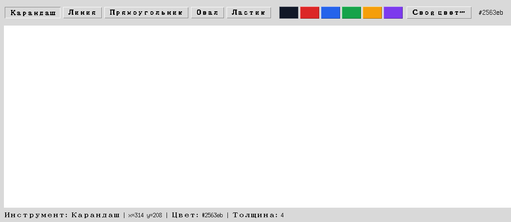

Глава 18 · Финальные штрихи
Строка состояния
Инструмент, координаты, цвет и толщина — сразу видны, без необходимости лезть в код.
Одна строка — четыре факта сразу

stroka_sostoyaniya.py
def _update_status(self, x, y):
coords = f"x={x} y={y}" if x is not None else "x=— y=—"
self.status_var.set(
f"Инструмент: {TOOL_LABELS[self.state.tool]} | {coords} | "
f"Цвет: {self.state.color} | Толщина: {self.state.width}"
)Строка обновляется в трёх разных местах: при смене инструмента, при движении мыши
(<Motion>) и при выборе цвета или толщины — везде, где
меняется хотя бы одно из четырёх значений.
Живое доказательство пользы event.x / event.y
Координаты курсора — не абстракция «где-то в коде»: строка состояния делает их видимыми в реальном времени, буквально на каждое движение мыши. Это тот же
event.x/event.y, который используют on_press/on_drag для самого рисования.Практика: строка состояния приложения
Модуль tkinter открывает нативное окно Python — выполните локально в VS Code, PyCharm или Jupyter
Практика выполняется локально